scrub-jay-UCE-vignette
scrub-jay-UCE-vignette.RmdThis is an example of filtering SNPs derived from sequencing UCE’s (ultra-conserved elements) for 28 bird toe-pad samples. This filtering example starts with the unfiltered vcf file that I downloaded from the publicly available repository associated with the paper Sequence capture of ultraconserved elements from bird museum specimens. This small next-generation dataset can be easily handled in Rstudio on a personal laptop, and is ideal for showing off the interactive functionality of SNPfiltR. Because these samples come from degraded DNA (avian toepads), and contain varying levels of contamination (according to the paper) they are also ideal for showing the necessity of stringent filtering protocols both by sample and by SNP.
Optional Step 0: per sample quality control
Do quality control per sample before performing SNP calling. I have written an RMarkdown script that uses the R package fastqcr to generate a report visualizing the quality and quantity of sequencing for each sample, and recommending a subset of samples to be immediately dropped before parameter optimization (specifically useful for RADseq data). The only modification necessary for this script is the path to the folder containing the input .fastq.gz files and the path to your desired output folder. An example report generated using this script can be seen here. Because the fastq.gz files for your experiment may be large and handled remotely, an example bash script for executing this RMarkdown file as a job on a high performance computing cluster is available here.
Step 1: read in vcf file as ‘vcfR’ object
Read in vcf file using vcfR
library(SNPfiltR)
library(vcfR)
#>
#> ***** *** vcfR *** *****
#> This is vcfR 1.12.0
#> browseVignettes('vcfR') # Documentation
#> citation('vcfR') # Citation
#> ***** ***** ***** *****
#read in vcf as vcfR
vcfR <- read.vcfR("~/Downloads/doi_10.5061_dryad.qh8sh__v1/wesj-toepads-rawSNPS-Q30.vcf")
#check out metadata for the vcf file
vcfR
#> ***** Object of Class vcfR *****
#> 28 samples
#> 4524 CHROMs
#> 44,490 variants
#> Object size: 40.2 Mb
#> 31.02 percent missing data
#> ***** ***** *****
#generate popmap file. Two column popmap with the same format as stacks, and the columns must be named 'id' and 'pop'
popmap<-data.frame(id=colnames(vcfR@gt)[2:length(colnames(vcfR@gt))],pop=substr(colnames(vcfR@gt)[2:length(colnames(vcfR@gt))], 3,11))
popmap$pop<-c("ca","wood","ca","ca","ca","wood","wood","ca","wood","wood","sumi","ca","sumi",
"wood","wood","sumi","sumi","wood","ca","ca","wood","ca","sumi","ca","ca",
"ca","ca","hybrid")Step 2: quality filtering
Implement quality filters that don’t involve missing data. This is because removing low data samples will alter percentage/quantile based missing data cutoffs, so we wait to implement those until after deciding on our final set of samples for downstream analysis
Note:
Jon Puritz has an excellent filtering tutorial that is focused specifically on filtering RADseq data Multiple functions in SNPfiltR were generated in order to follow the guidelines and suggestions laid out in this tutorial. We can follow these guidelines for hard filtering (he suggests minimum depth=3, gq =30), and can implement suggested filters like allele balance and max depth, here in R using SNPfiltR.
start by visualizing the distributions of depth of sequencing and genotype quality among called genotypes, then set appropriate cutoffs for both values for this dataset.
#visualize distributions
hard_filter(vcfR=vcfR)
#> no depth cutoff provided, exploratory visualization will be generated.#> no genotype quality cutoff provided, exploratory visualization will be generated.#> ***** Object of Class vcfR *****
#> 28 samples
#> 4524 CHROMs
#> 44,490 variants
#> Object size: 40.2 Mb
#> 31.02 percent missing data
#> ***** ***** *****
#hard filter to minimum depth of 5, and minimum genotype quality of 30
vcfR<-hard_filter(vcfR=vcfR, depth = 3, gq = 20)
#> 16.89% of genotypes fall below a read depth of 3 and were converted to NA
#> 31.72% of genotypes fall below a genotype quality of 20 and were converted to NA
#remove loci with > 2 alleles
vcfR<-filter_biallelic(vcfR)
#> 228 SNPs, 0.005% of all input SNPs, contained more than 2 alleles, and were removed from the VCFThen use this function to filter for allele balance
From the Ddocent SNP filtering tutorial “Allele balance: a number between 0 and 1 representing the ratio of reads showing the reference allele to all reads, considering only reads from individuals called as heterozygous, we expect that the allele balance in our data (for real loci) should be close to 0.5”
the SNPfiltR allele balance function will convert heterozygous genotypes to missing if they fall outside of the .25-.75 range.
#execute allele balance filter
vcfR<-filter_allele_balance(vcfR)
#> 38.85% of het genotypes (6.12% of all genotypes) fall outside of .25 - .75 allele balance and were converted to NANow we can execute a max depth filter (super high depth loci are likely multiple loci stuck together into a single paralogous locus).
Note:
This filter is applied ‘per SNP’ rather than ‘per genotype’ otherwise we would simply be removing most of the genotypes from our deepest sequenced samples (because sequencing depth is so variable between samples). By filtering per SNP, we remove the SNPs with outlier depth values, which are most likely to be spuriously mapped/built paralagous loci.
#visualize and pick appropriate max depth cutoff
max_depth(vcfR)
#> cutoff is not specified, exploratory visualization will be generated.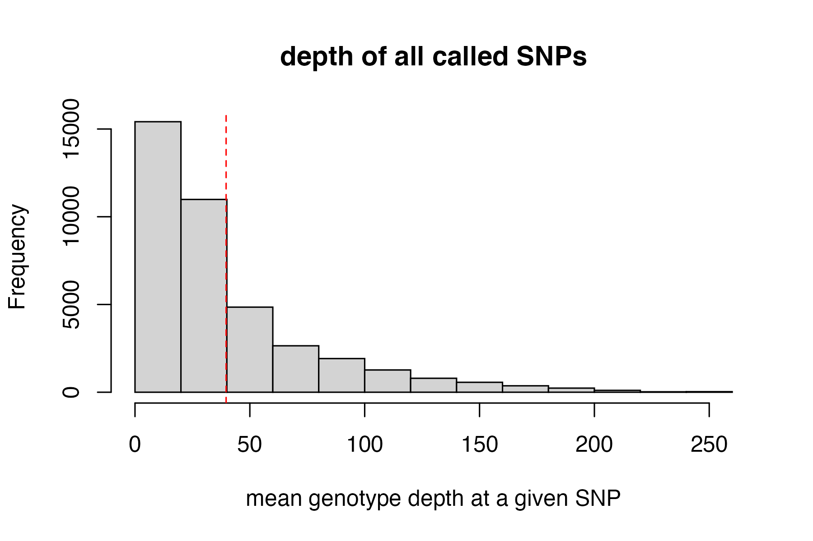
#> dashed line indicates a mean depth across all SNPs of 39.7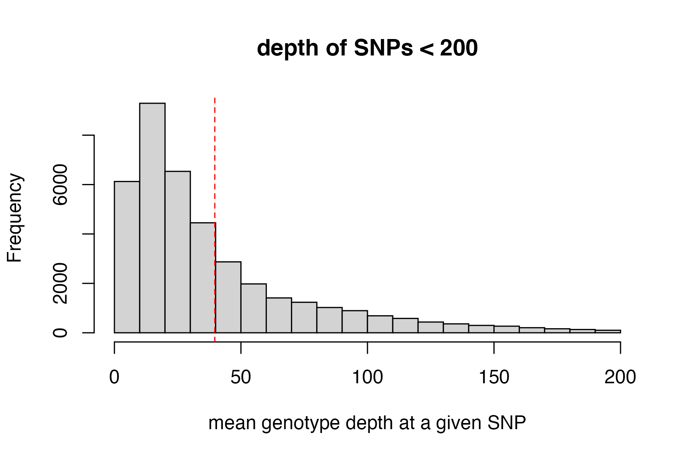
#filter vcf by the max depth cutoff you chose
vcfR<-max_depth(vcfR, maxdepth = 150)
#> maxdepth cutoff is specified, filtered vcfR object will be returned
#> 2.32% of SNPs were above a mean depth of 150 and were removed from the vcfNote:
It may be a good idea to additionally filter out SNPs that are significantly out of HWE if you have a really good idea of what the population structure in your sample looks like and good sample sizes in each pop. For this dataset, which is highly structured (many isolated island pops) with species boundaries that are in flux, I am not going to use a HWE filter, because I don’t feel comfortable confidently identifying populations in which we can expect HWE. Many other programs (such as VCFtools) can filter according to HWE if desired.
#remove invariant SNPs generated during the genotype filtering steps
vcfR<-min_mac(vcfR, min.mac = 1)
#> 38.88% of SNPs fell below a minor allele count of 1 and were removed from the VCF
#check vcfR to see how many SNPs we have left
vcfR
#> ***** Object of Class vcfR *****
#> 28 samples
#> 4158 CHROMs
#> 26,425 variants
#> Object size: 24.2 Mb
#> 58.53 percent missing data
#> ***** ***** *****Step 3: set missing data per sample cutoff
Set arbitrary cutoff for missing data allowed per sample.
Determining which samples and SNPs to retain is always project specific, and is contingent on sampling, biology of the focal taxa, sequencing idiosyncrasies, etc. SNPfiltR contains functions designed to simply and easily generate exploratory visualizations that will allow you to make informed decisions about which samples and SNPs are of sufficient quality to retain for downstream analyses, but there is never a single correct option for these cutoffs. In my experience, the best thing to do is to look at your data, look at what effects some reasonable cutoffs would have on your data, and pick one that works for you. Then as you continue to analyze your data, make sure that your arbitrary filtering decisions are not driving the patterns you see, and iteratively update your filtering approach if you are concerned about the effects previous filtering choices are having on downstream results.
We will start by determining which samples contain too few sequences to be used in downstream analyses, by visualizing missing data per sample
#run function to visualize samples
miss<-missing_by_sample(vcfR=vcfR, popmap = popmap)
#> Warning: Groups with fewer than two data points have been dropped.
#> Bin width defaults to 1/30 of the range of the data. Pick better value with `binwidth`.
#> Warning: Groups with fewer than two data points have been dropped.
#> Bin width defaults to 1/30 of the range of the data. Pick better value with `binwidth`.we can see that there are about 7 samples with really high levels of missing data. One approach would be to simply drop these samples, and continue on with only the high quality samples. Because they retained all samples (except one) in the paper, we will continue on and see if we can salvage all samples via stringent filtering.
#assess whether missing data is driving clustering patterns among the retained samples
clust<-assess_missing_data_pca(vcfR=vcfR, popmap = popmap, thresholds = c(.75,.8,.85), clustering = FALSE)
#> cutoff is specified, filtered vcfR object will be returned
#> 83.72% of SNPs fell below a completeness cutoff of 0.75 and were removed from the VCF
#> Loading required namespace: adegenet
#> Registered S3 method overwritten by 'spdep':
#> method from
#> plot.mst ape#> cutoff is specified, filtered vcfR object will be returned#> 91.09% of SNPs fell below a completeness cutoff of 0.8 and were removed from the VCF#> cutoff is specified, filtered vcfR object will be returned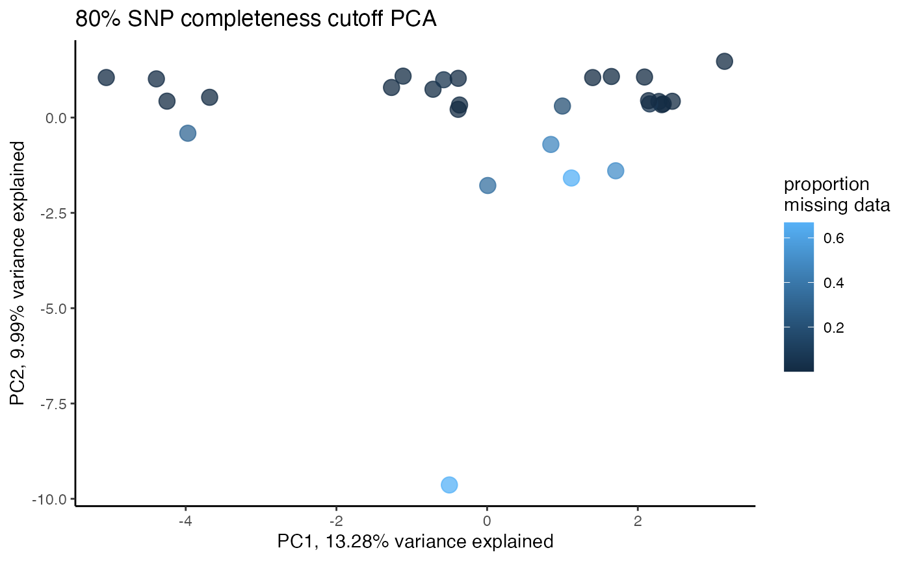
#> 93.79% of SNPs fell below a completeness cutoff of 0.85 and were removed from the VCF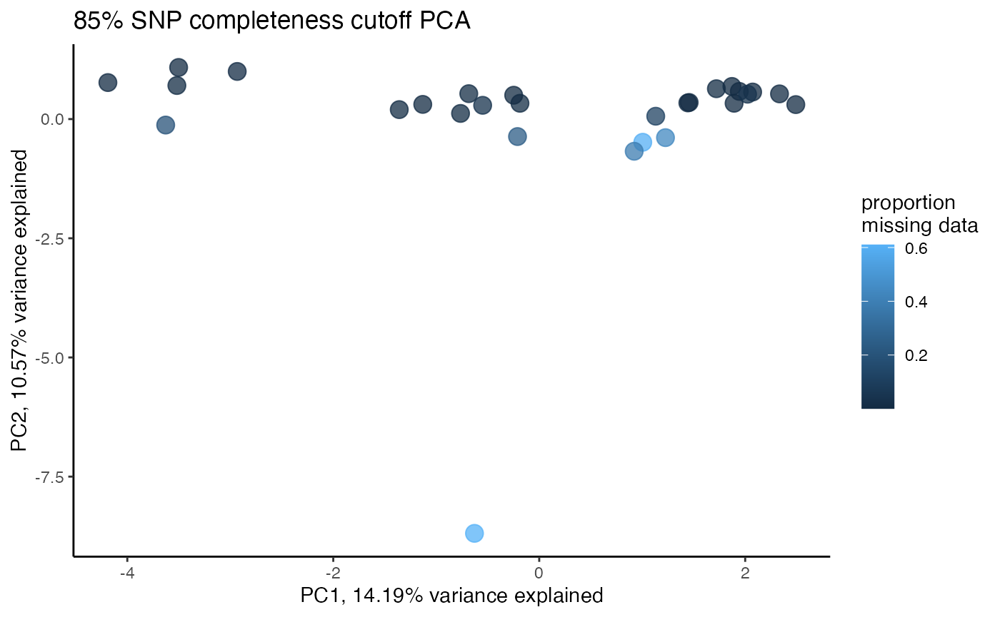
#proportion missing data seems to be driving PC2
#but the effect seems to be somewhat mitigated above 80% completeness threshold per SNP
#except for that single terrible sample (144749) which was actually dropped in the paper due to contamination concerns. We will drop it and see if that makes the situation better
#drop potentially contaminated sample with low data
vcfR <- vcfR[,colnames(vcfR@gt) != "wesj-144749"]
#subset popmap to only include retained individuals
popmap<-popmap[popmap$id %in% colnames(vcfR@gt),]
#remove invariant sites, which arise from dropping samples
vcfR<-min_mac(vcfR, min.mac = 1)
#> 2.13% of SNPs fell below a minor allele count of 1 and were removed from the VCF
#re-assess whether missing data is driving clustering patterns after dropping terrible sample
clust<-assess_missing_data_pca(vcfR=vcfR, popmap = popmap, thresholds = c(.75,.8,.85), clustering = FALSE)
#> cutoff is specified, filtered vcfR object will be returned
#> 85.21% of SNPs fell below a completeness cutoff of 0.75 and were removed from the VCF#> cutoff is specified, filtered vcfR object will be returned#> 89.11% of SNPs fell below a completeness cutoff of 0.8 and were removed from the VCF
#> cutoff is specified, filtered vcfR object will be returned#> 92.41% of SNPs fell below a completeness cutoff of 0.85 and were removed from the VCF
 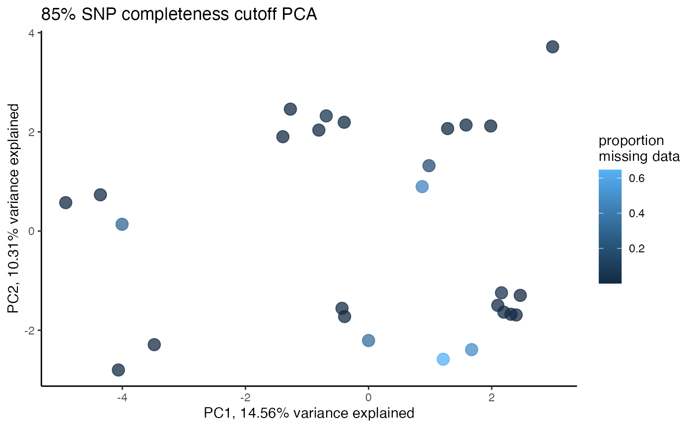
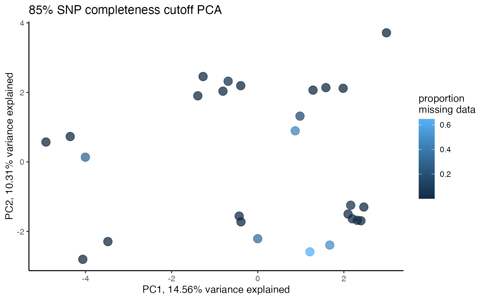
#clustering still not great, but at least doesn't seem to be as driven by missing data patterns nowStep 4: set missing data per SNP cutoff
Note:
This filter interacts with the above filter, where we dropped low data samples. A good rule of thumb is that individual samples shouldn’t be above 50% missing data after applying a per-SNP missing data cutoff. So if we are retaining specific low data samples out of necessity or project design, we may have to set a more stringent per-SNP missing data cutoff, at the expense of the total number of SNPs retained for downstream analyses. We can again use the assess_missing_data_pca() function to determine whether all retained samples contain enough data at our chosen cutoff in order to be assigned accurately to their species group.
#visualize missing data by SNP and the effect of various cutoffs on the missingness of each sample
missing_by_snp(vcfR)
#> cutoff is not specified, exploratory visualizations will be generated
#> Picking joint bandwidth of 0.112#> filt missingness snps.retained
#> 1 0.30 0.37746555 14543
#> 2 0.50 0.27894654 10093
#> 3 0.60 0.23272021 7871
#> 4 0.65 0.21548196 6995
#> 5 0.70 0.19623532 6013
#> 6 0.75 0.14944532 3826
#> 7 0.80 0.12334280 2816
#> 8 0.85 0.09651505 1964
#> 9 0.90 0.04844337 828
#> 10 0.95 0.02528736 435
#> 11 1.00 0.00000000 138
#try using t-SNE, a machine learning algorithm, for dimensionality reduction and visualization of sample clustering in two-dimensional space
#verify that missing data is not driving clustering patterns among the retained samples at some reasonable thresholds
miss<-assess_missing_data_tsne(vcfR=vcfR, popmap = popmap, thresholds = c(.75,.85), clustering = FALSE, iterations = 5000, perplexity = 3)
#> cutoff is specified, filtered vcfR object will be returned
#> 85.21% of SNPs fell below a completeness cutoff of 0.75 and were removed from the VCF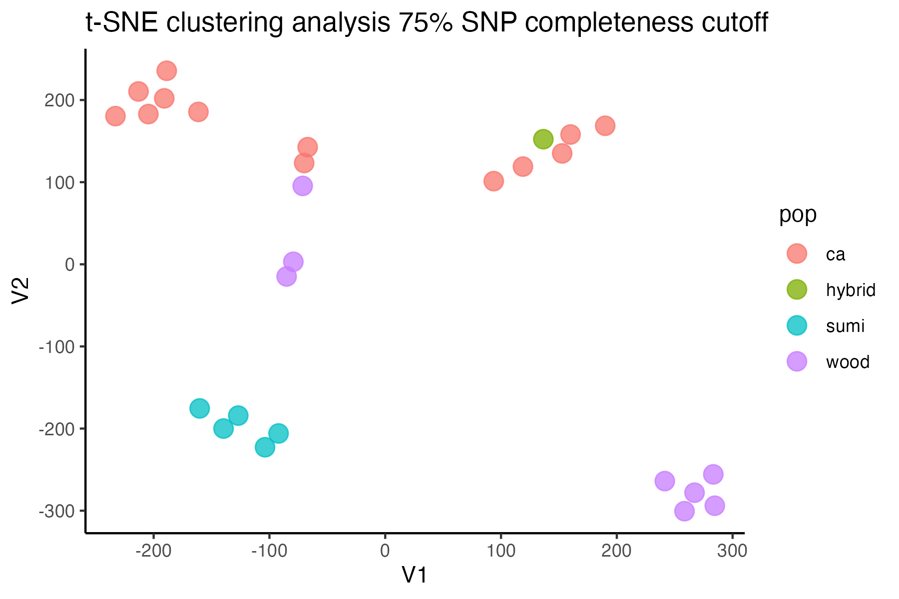
#> cutoff is specified, filtered vcfR object will be returned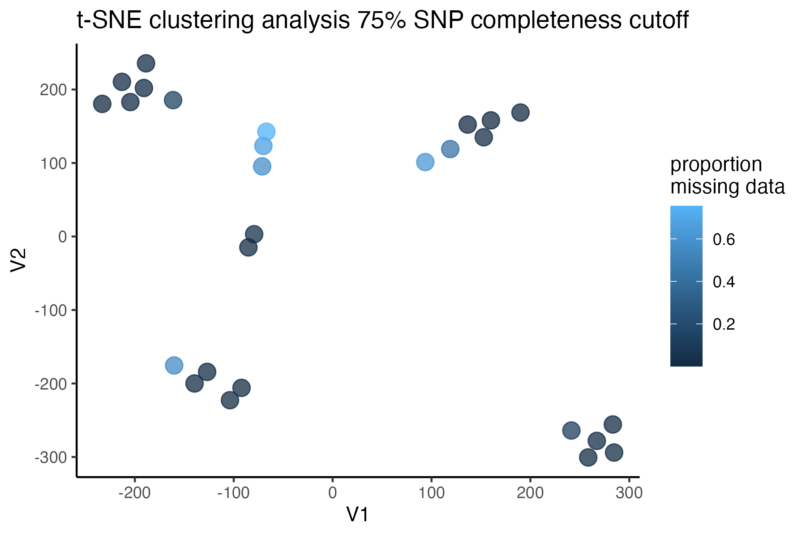
#> 92.41% of SNPs fell below a completeness cutoff of 0.85 and were removed from the VCF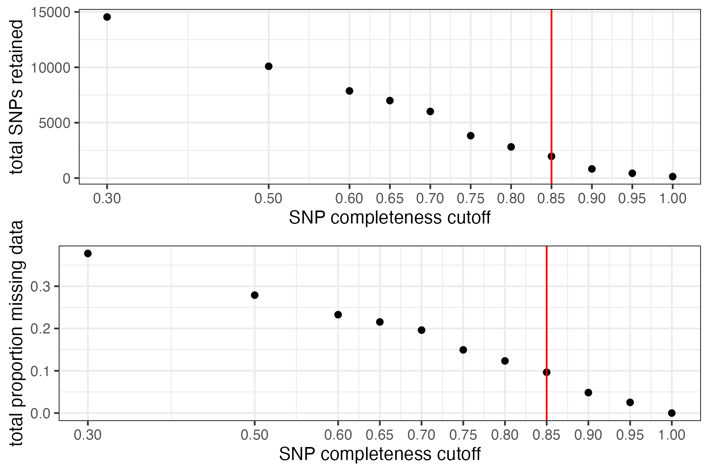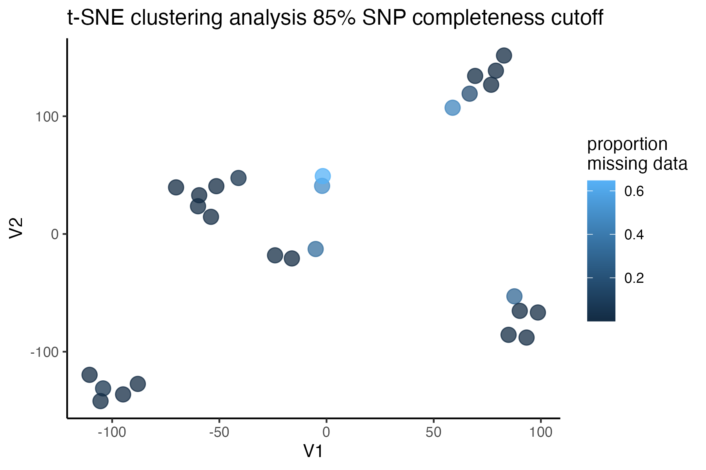
missing data is not driving the patterns of clustering here, but there are really strange and messy patterns
#the paper talks about contamination between samples on the sequencing lane, and it seems that although the species generally cluster, there are contamination issues preventing clean inference
according to the paper, there are legitimately two groups in woodhouseii (interior US and northern Mexico), but californica should all cluster together.
#choose a value that retains an acceptable amount of missing data in each sample, and maximizes SNPs retained while minimizing overall missing data, and filter vcf
vcfR<-missing_by_snp(vcfR, cutoff = .85)
#> cutoff is specified, filtered vcfR object will be returned
#> 92.41% of SNPs fell below a completeness cutoff of 0.85 and were removed from the VCF
#check how many SNPs and samples are left
vcfR
#> ***** Object of Class vcfR *****
#> 27 samples
#> 1153 CHROMs
#> 1,964 variants
#> Object size: 4 Mb
#> 9.652 percent missing data
#> ***** ***** *****Step 5: minor allele and linkage filtering
investigate the effect of a minor allele count (MAC) cutoff on downstream inferences. We always want to do this last, because these filters are not quality aware, and using them early in the pipeline will result in dumping good SNPs.
MAC/MAF cutoffs can be helpful in removing spurious and uninformative loci from the dataset, but also have the potential to bias downstream inferences. Linck and Battey (2019) have an excellent paper on just this topic. From the paper-
“We recommend researchers using model‐based programs to describe population structure observe the following best practices: (a) duplicate analyses with nonparametric methods suchas PCA and DAPC with cross validation (b) exclude singletons (c) compare alignments with multiple assembly parameters When seeking to exclude only singletons in alignments with missing data (a ubiquitous problem for reduced‐representation library preparation methods), it is preferable to filter by the count (rather than frequency) of the minor allele, because variation in the amount of missing data across an alignment will cause a static frequency cutoff to remove different SFS classes at different sites”"
Our package contains a convenient wrapper functions that can filter based on minor allele count (MAC) and streamline investigation of the effects of various filtering parameters on sample clustering patterns.
#investigate clustering patterns with and without a minor allele cutoff
#use min.mac() to investigate the effect of multiple cutoffs
vcfR.mac<-min_mac(vcfR = vcfR, min.mac = 2)
#> 65.43% of SNPs fell below a minor allele count of 2 and were removed from the VCF
#assess clustering without MAC cutoff
miss<-assess_missing_data_tsne(vcfR, popmap, clustering = FALSE, iterations = 5000, perplexity = 3)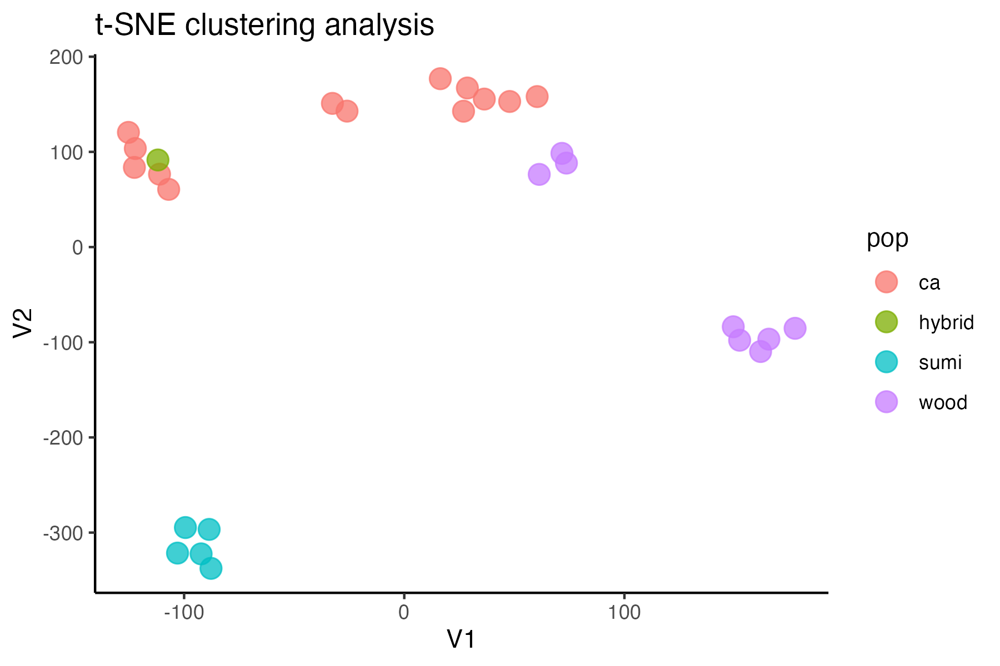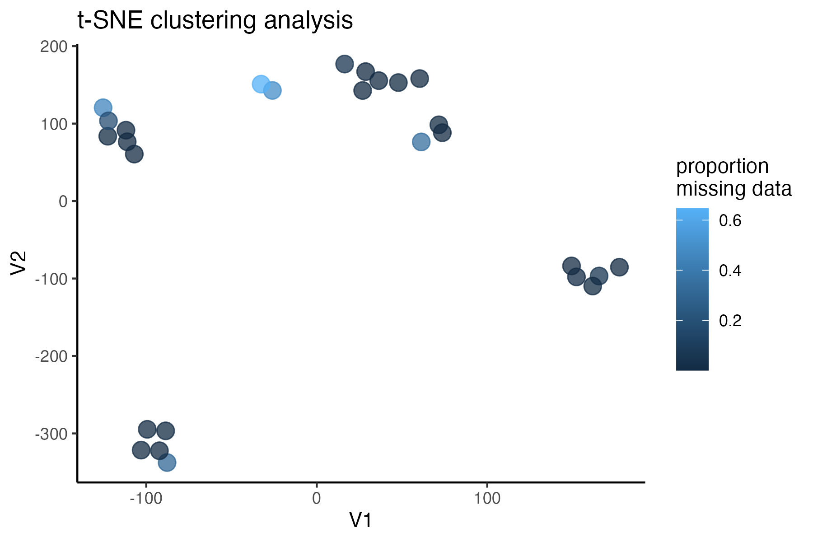
#assess clustering with MAC cutoff
miss<-assess_missing_data_tsne(vcfR.mac, popmap, clustering = FALSE, iterations = 5000, perplexity = 3)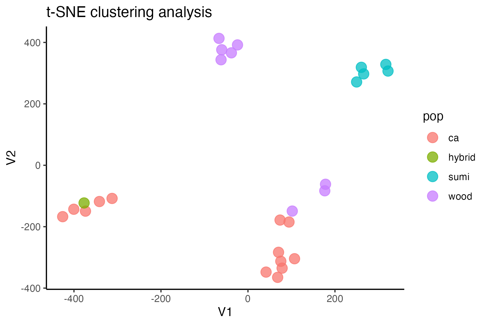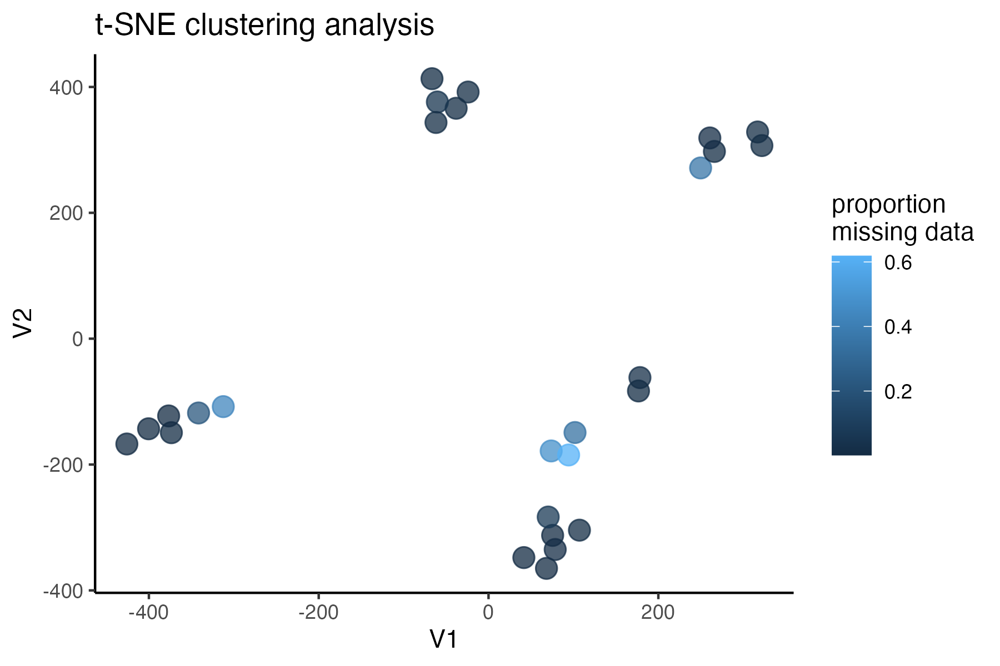
#singletons don't seem to be biasing the datset, so I will keep them in for nowtry thinning the dataset to one SNP per locus, a common approach for UCE’s
#linkage filter vcf to thin SNPs to one per 10kb
vcfR.thin<-distance_thin(vcfR, min.distance = 10000)
#>
|
| | 0%
|
| | 1%
|
|= | 1%
|
|= | 2%
|
|== | 2%
|
|== | 3%
|
|== | 4%
|
|=== | 4%
|
|=== | 5%
|
|==== | 5%
|
|==== | 6%
|
|===== | 7%
|
|===== | 8%
|
|====== | 8%
|
|====== | 9%
|
|======= | 9%
|
|======= | 10%
|
|======= | 11%
|
|======== | 11%
|
|======== | 12%
|
|========= | 12%
|
|========= | 13%
|
|========= | 14%
|
|========== | 14%
|
|========== | 15%
|
|=========== | 15%
|
|=========== | 16%
|
|============ | 16%
|
|============ | 17%
|
|============ | 18%
|
|============= | 18%
|
|============= | 19%
|
|============== | 19%
|
|============== | 20%
|
|============== | 21%
|
|=============== | 21%
|
|=============== | 22%
|
|================ | 22%
|
|================ | 23%
|
|================ | 24%
|
|================= | 24%
|
|================= | 25%
|
|================== | 25%
|
|================== | 26%
|
|=================== | 26%
|
|=================== | 27%
|
|=================== | 28%
|
|==================== | 28%
|
|==================== | 29%
|
|===================== | 29%
|
|===================== | 30%
|
|===================== | 31%
|
|====================== | 31%
|
|====================== | 32%
|
|======================= | 32%
|
|======================= | 33%
|
|======================= | 34%
|
|======================== | 34%
|
|======================== | 35%
|
|========================= | 35%
|
|========================= | 36%
|
|========================== | 37%
|
|========================== | 38%
|
|=========================== | 38%
|
|=========================== | 39%
|
|============================ | 39%
|
|============================ | 40%
|
|============================ | 41%
|
|============================= | 41%
|
|============================= | 42%
|
|============================== | 42%
|
|============================== | 43%
|
|============================== | 44%
|
|=============================== | 44%
|
|=============================== | 45%
|
|================================ | 45%
|
|================================ | 46%
|
|================================= | 46%
|
|================================= | 47%
|
|================================= | 48%
|
|================================== | 48%
|
|================================== | 49%
|
|=================================== | 49%
|
|=================================== | 50%
|
|=================================== | 51%
|
|==================================== | 51%
|
|==================================== | 52%
|
|===================================== | 52%
|
|===================================== | 53%
|
|===================================== | 54%
|
|====================================== | 54%
|
|====================================== | 55%
|
|======================================= | 55%
|
|======================================= | 56%
|
|======================================== | 56%
|
|======================================== | 57%
|
|======================================== | 58%
|
|========================================= | 58%
|
|========================================= | 59%
|
|========================================== | 59%
|
|========================================== | 60%
|
|========================================== | 61%
|
|=========================================== | 61%
|
|=========================================== | 62%
|
|============================================ | 62%
|
|============================================ | 63%
|
|============================================= | 64%
|
|============================================= | 65%
|
|============================================== | 65%
|
|============================================== | 66%
|
|=============================================== | 66%
|
|=============================================== | 67%
|
|=============================================== | 68%
|
|================================================ | 68%
|
|================================================ | 69%
|
|================================================= | 69%
|
|================================================= | 70%
|
|================================================= | 71%
|
|================================================== | 71%
|
|================================================== | 72%
|
|=================================================== | 72%
|
|=================================================== | 73%
|
|=================================================== | 74%
|
|==================================================== | 74%
|
|==================================================== | 75%
|
|===================================================== | 75%
|
|===================================================== | 76%
|
|====================================================== | 76%
|
|====================================================== | 77%
|
|====================================================== | 78%
|
|======================================================= | 78%
|
|======================================================= | 79%
|
|======================================================== | 79%
|
|======================================================== | 80%
|
|======================================================== | 81%
|
|========================================================= | 81%
|
|========================================================= | 82%
|
|========================================================== | 82%
|
|========================================================== | 83%
|
|========================================================== | 84%
|
|=========================================================== | 84%
|
|=========================================================== | 85%
|
|============================================================ | 85%
|
|============================================================ | 86%
|
|============================================================= | 86%
|
|============================================================= | 87%
|
|============================================================= | 88%
|
|============================================================== | 88%
|
|============================================================== | 89%
|
|=============================================================== | 89%
|
|=============================================================== | 90%
|
|=============================================================== | 91%
|
|================================================================ | 91%
|
|================================================================ | 92%
|
|================================================================= | 92%
|
|================================================================= | 93%
|
|================================================================== | 94%
|
|================================================================== | 95%
|
|=================================================================== | 95%
|
|=================================================================== | 96%
|
|==================================================================== | 96%
|
|==================================================================== | 97%
|
|==================================================================== | 98%
|
|===================================================================== | 98%
|
|===================================================================== | 99%
|
|======================================================================| 99%
|
|======================================================================| 100%
#> 1153 out of 1964 input SNPs were not located within 10000 base-pairs of another SNP and were retained despite filtering
#assess clustering on the thinned dataset
miss<-assess_missing_data_tsne(vcfR.thin, popmap, clustering = FALSE, iterations = 5000, perplexity = 3)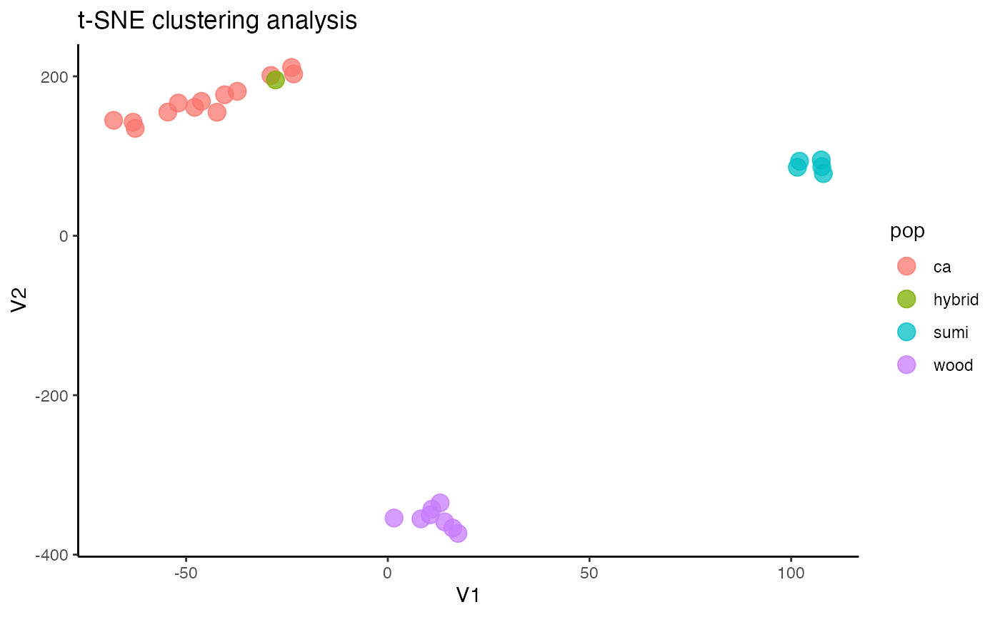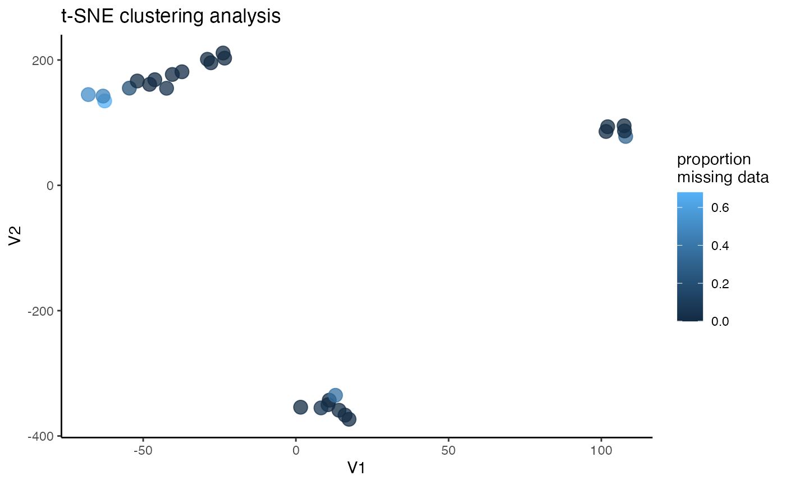
#Wow, thinning to one SNP per locus totally removed the contamination issues we were seeing, and resulted in clean clustering patterns using t-SNESee if this thinned datset results in clean PCA clustering
#try using PCA clustering
miss<-assess_missing_data_pca(vcfR.thin, popmap, clustering=FALSE)We can clearly see here that a single sample with too much missing data ruins PC1. Interesting to note that the same amount of missing data that is tolerable for tsne analysis results in a completely wonky PCA. Let’s check out what removing the single worst missing data outlier does to fix this problem.
#remove missing data outlier
missing_by_sample(vcfR.thin)
#> No popmap provided#> indiv filt snps.retained
#> 1 wesj-103135 0.5 1153
#> 2 wesj-103200 0.5 1149
#> 3 wesj-109289 0.5 1151
#> 4 wesj-113832 0.5 1151
#> 5 wesj-115531 0.5 1152
#> 6 wesj-11931 0.5 1095
#> 7 wesj-12581 0.5 1152
#> 8 wesj-13355 0.5 560
#> 9 wesj-144753 0.5 724
#> 10 wesj-185534 0.5 788
#> 11 wesj-20530 0.5 1150
#> 12 wesj-29499 0.5 1151
#> 13 wesj-343483 0.5 1147
#> 14 wesj-34662 0.5 1143
#> 15 wesj-346851 0.5 1148
#> 16 wesj-38918 0.5 1149
#> 17 wesj-46645 0.5 1148
#> 18 wesj-50798 0.5 370
#> 19 wesj-56723 0.5 1149
#> 20 wesj-58167 0.5 1153
#> 21 wesj-65019 0.5 1150
#> 22 wesj-67235 0.5 1148
#> 23 wesj-714 0.5 617
#> 24 wesj-7334 0.5 1098
#> 25 wesj-73921 0.5 911
#> 26 wesj-85535 0.5 1148
#> 27 wesj-B03 0.5 1153
#> 28 wesj-103135 0.6 1153
#> 29 wesj-103200 0.6 1149
#> 30 wesj-109289 0.6 1151
#> 31 wesj-113832 0.6 1151
#> 32 wesj-115531 0.6 1152
#> 33 wesj-11931 0.6 1095
#> 34 wesj-12581 0.6 1152
#> 35 wesj-13355 0.6 560
#> 36 wesj-144753 0.6 724
#> 37 wesj-185534 0.6 788
#> 38 wesj-20530 0.6 1150
#> 39 wesj-29499 0.6 1151
#> 40 wesj-343483 0.6 1147
#> 41 wesj-34662 0.6 1143
#> 42 wesj-346851 0.6 1148
#> 43 wesj-38918 0.6 1149
#> 44 wesj-46645 0.6 1148
#> 45 wesj-50798 0.6 370
#> 46 wesj-56723 0.6 1149
#> 47 wesj-58167 0.6 1153
#> 48 wesj-65019 0.6 1150
#> 49 wesj-67235 0.6 1148
#> 50 wesj-714 0.6 617
#> 51 wesj-7334 0.6 1098
#> 52 wesj-73921 0.6 911
#> 53 wesj-85535 0.6 1148
#> 54 wesj-B03 0.6 1153
#> 55 wesj-103135 0.7 1153
#> 56 wesj-103200 0.7 1149
#> 57 wesj-109289 0.7 1151
#> 58 wesj-113832 0.7 1151
#> 59 wesj-115531 0.7 1152
#> 60 wesj-11931 0.7 1095
#> 61 wesj-12581 0.7 1152
#> 62 wesj-13355 0.7 560
#> 63 wesj-144753 0.7 724
#> 64 wesj-185534 0.7 788
#> 65 wesj-20530 0.7 1150
#> 66 wesj-29499 0.7 1151
#> 67 wesj-343483 0.7 1147
#> 68 wesj-34662 0.7 1143
#> 69 wesj-346851 0.7 1148
#> 70 wesj-38918 0.7 1149
#> 71 wesj-46645 0.7 1148
#> 72 wesj-50798 0.7 370
#> 73 wesj-56723 0.7 1149
#> 74 wesj-58167 0.7 1153
#> 75 wesj-65019 0.7 1150
#> 76 wesj-67235 0.7 1148
#> 77 wesj-714 0.7 617
#> 78 wesj-7334 0.7 1098
#> 79 wesj-73921 0.7 911
#> 80 wesj-85535 0.7 1148
#> 81 wesj-B03 0.7 1153
#> 82 wesj-103135 0.8 1153
#> 83 wesj-103200 0.8 1149
#> 84 wesj-109289 0.8 1151
#> 85 wesj-113832 0.8 1151
#> 86 wesj-115531 0.8 1152
#> 87 wesj-11931 0.8 1095
#> 88 wesj-12581 0.8 1152
#> 89 wesj-13355 0.8 560
#> 90 wesj-144753 0.8 724
#> 91 wesj-185534 0.8 788
#> 92 wesj-20530 0.8 1150
#> 93 wesj-29499 0.8 1151
#> 94 wesj-343483 0.8 1147
#> 95 wesj-34662 0.8 1143
#> 96 wesj-346851 0.8 1148
#> 97 wesj-38918 0.8 1149
#> 98 wesj-46645 0.8 1148
#> 99 wesj-50798 0.8 370
#> 100 wesj-56723 0.8 1149
#> 101 wesj-58167 0.8 1153
#> 102 wesj-65019 0.8 1150
#> 103 wesj-67235 0.8 1148
#> 104 wesj-714 0.8 617
#> 105 wesj-7334 0.8 1098
#> 106 wesj-73921 0.8 911
#> 107 wesj-85535 0.8 1148
#> 108 wesj-B03 0.8 1153
#> 109 wesj-103135 0.9 449
#> 110 wesj-103200 0.9 449
#> 111 wesj-109289 0.9 449
#> 112 wesj-113832 0.9 448
#> 113 wesj-115531 0.9 448
#> 114 wesj-11931 0.9 443
#> 115 wesj-12581 0.9 449
#> 116 wesj-13355 0.9 306
#> 117 wesj-144753 0.9 408
#> 118 wesj-185534 0.9 414
#> 119 wesj-20530 0.9 448
#> 120 wesj-29499 0.9 449
#> 121 wesj-343483 0.9 446
#> 122 wesj-34662 0.9 449
#> 123 wesj-346851 0.9 448
#> 124 wesj-38918 0.9 448
#> 125 wesj-46645 0.9 448
#> 126 wesj-50798 0.9 219
#> 127 wesj-56723 0.9 448
#> 128 wesj-58167 0.9 449
#> 129 wesj-65019 0.9 449
#> 130 wesj-67235 0.9 449
#> 131 wesj-714 0.9 346
#> 132 wesj-7334 0.9 448
#> 133 wesj-73921 0.9 418
#> 134 wesj-85535 0.9 449
#> 135 wesj-B03 0.9 449
#> 136 wesj-103135 1.0 72
#> 137 wesj-103200 1.0 72
#> 138 wesj-109289 1.0 72
#> 139 wesj-113832 1.0 72
#> 140 wesj-115531 1.0 72
#> 141 wesj-11931 1.0 72
#> 142 wesj-12581 1.0 72
#> 143 wesj-13355 1.0 72
#> 144 wesj-144753 1.0 72
#> 145 wesj-185534 1.0 72
#> 146 wesj-20530 1.0 72
#> 147 wesj-29499 1.0 72
#> 148 wesj-343483 1.0 72
#> 149 wesj-34662 1.0 72
#> 150 wesj-346851 1.0 72
#> 151 wesj-38918 1.0 72
#> 152 wesj-46645 1.0 72
#> 153 wesj-50798 1.0 72
#> 154 wesj-56723 1.0 72
#> 155 wesj-58167 1.0 72
#> 156 wesj-65019 1.0 72
#> 157 wesj-67235 1.0 72
#> 158 wesj-714 1.0 72
#> 159 wesj-7334 1.0 72
#> 160 wesj-73921 1.0 72
#> 161 wesj-85535 1.0 72
#> 162 wesj-B03 1.0 72
vcfR.thin<-missing_by_sample(vcfR.thin, cutoff = .6)
#> 1 samples are above a 0.6 missing data cutoff, and were removed from VCF
#subset popmap
popmap<-popmap[popmap$id %in% colnames(vcfR.thin@gt),]
#remove invariant sites
vcfR.thin<-min_mac(vcfR.thin, min.mac = 1)
#> 7.2% of SNPs fell below a minor allele count of 1 and were removed from the VCF
#recluster
miss<-assess_missing_data_pca(vcfR.thin, popmap, clustering=FALSE)
#missing data still driving PC2missing data is still driving patterns of clustering in a PCA, let’s go back to visualizing missing data by sample
miss<-missing_by_sample(vcfR.thin)
#> No popmap providedWe can see that there are 4-5 samples with a lot of missing data still even after all of our stringent filtering cutoffs, to the point that it is driving clustering patterns in a PCA. This highlights the relative nature of SNP filtering protocols. If your goal is to perform t-SNE clustering, you may be able to retain all of the samples. Meanwhile, if you want to use PCA for clustering, you would want to drop the seven samples with low-data identified at the beginning of our filtering exploration (Step 3).
Remove the five remaining low data samples
#set cutoff
vcfR.thin.drop<-missing_by_sample(vcfR.thin, cutoff = .25)
#> 4 samples are above a 0.25 missing data cutoff, and were removed from VCF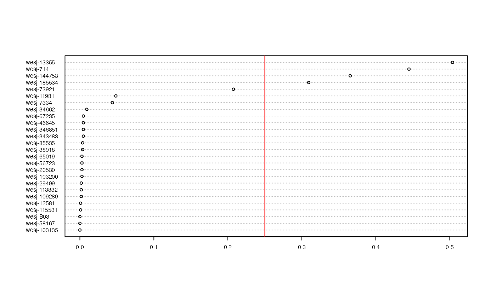
#subset popmap
popmap<-popmap[popmap$id %in% colnames(vcfR.thin.drop@gt),]
#remove invariant sites
vcfR.thin.drop<-min_mac(vcfR.thin.drop, min.mac = 1)
#> 34.3% of SNPs fell below a minor allele count of 1 and were removed from the VCF
#recluster
miss<-assess_missing_data_pca(vcfR.thin.drop, popmap, clustering=FALSE)let’s compare overall depth and genotype quality from the two datasets (with and without dropping 5+ samples) using some excellent functions from vcfR
#plot depth per snp and per sample for the filtered, thinned dataset
dp <- extract.gt(vcfR.thin, element = "DP", as.numeric=TRUE)
heatmap.bp(dp, rlabels = FALSE)
#plot depth per snp and per sample for the filtered, thinned dataset with samples dropped
dp <- extract.gt(vcfR.thin.drop, element = "DP", as.numeric=TRUE)
heatmap.bp(dp, rlabels = FALSE)
#plot depth per snp and per sample for the filtered, thinned dataset
dp <- extract.gt(vcfR.thin, element = "GQ", as.numeric=TRUE)
heatmap.bp(dp, rlabels = FALSE)
#plot depth per snp and per sample for the filtered, thinned dataset with samples dropped
dp <- extract.gt(vcfR.thin.drop, element = "GQ", as.numeric=TRUE)
heatmap.bp(dp, rlabels = FALSE)We can see that these five problematic samples have low depth of sequencing, low quality on called genotypes, and high amounts of missing data. Retaining these samples may be possible depending on which analyses you wish to perform. The paper Sequence capture of ultraconserved elements from bird museum specimens showed that some analyses such as creating a SNAPP species tree worked quite well despite these poor quality samples, while other analyses such as STRUCTURE were sensitive to the high missing data and potential contamination in these low quality samples. Regardless of your goals, SNPfiltR allows you to quickly document your preliminary analyses and filtering decisions as you investigate your SNP dataset.
Step 6: write out vcf files for downstream analyses.
Note:
The function vcfR::write.vcf() automatically writes a gzipped vcf file, so be sure to add the suffix .gz to the name of your output file.
Write out the filtered, thinned vcf, with and without extra samples dropped, for use in downstream analyses
#write out vcf with all SNPs
#vcfR::write.vcf(vcfR.thin, "~/Downloads/aphelocoma.uce.filtered.thinned.vcf.gz")
#write out thinned vcf
#vcfR::write.vcf(vcfR.thin.drop, "~/Downloads/aphelocoma.uce.filtered.thinned.drop.vcf.gz")